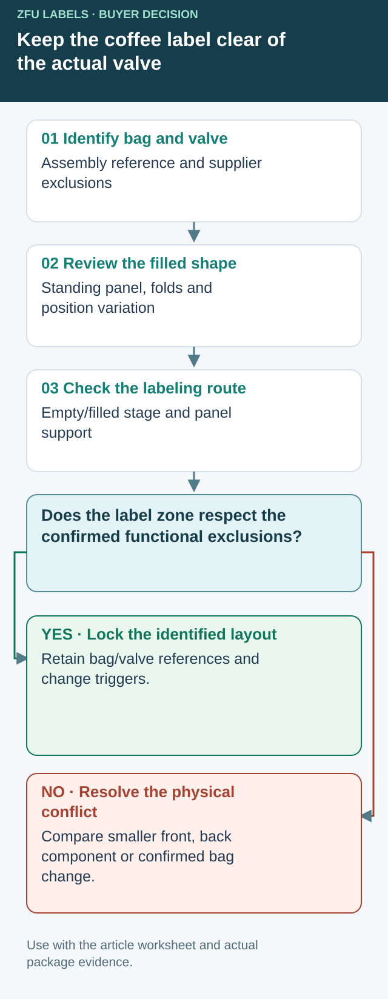

Lock the usable label zone to the bag and valve assembly
A clearance marked around a valve in a flat drawing can disappear when the valve reference, installation position or filled bag changes. Ask the bag supplier to identify the actual assembly and the areas that must remain unobstructed. Keep those constraints with the label drawing instead of expecting the converter to infer valve function from a round feature in a photograph.


Use this bag-change record for the proposed label zone. The bag/valve supplier and packaging owner determine the functional clearance; this guide specifies no universal distance and makes no valve-performance claim.
| Controlled item | Reference or observation | Reopen the layout when |
|---|---|---|
| Bag supply | Supplier, bag reference, outside surface and version | Construction or package reference changes |
| Valve assembly | Identified valve and supplier's functional exclusions | Valve type, position or assembly changes |
| Position basis | Agreed datum and stated installation variation | Actual supply no longer represents that basis |
| Filled shape | Product/fill condition, standing view and panel bow | Another fill or format changes the usable zone |
| Application | Empty/filled stage and how the panel is supported | Packing sequence or support changes |
| Label release | Cut outline, artwork revision and approved placement | Footprint or critical information moves |
Compare variation before enlarging the front label
In a hypothetical two-roast range, the same bag reference is purchased from successive lots. The brand wants to make its tasting-note panel taller. Check the supplier's stated valve-position basis and representative filled packs before using every visible millimeter on one attractive sample. Do not invent a tolerance from a ruler photograph or treat one centered valve as the whole supply's limit.
If the required label zone conflicts with the confirmed exclusion, compare a smaller common front label, a coordinated back component or a bag change confirmed by its supplier. A second component adds an application and SKU-matching task. A bag change may affect inventory and qualification. Record those consequences instead of moving the valve in the mockup and calling the conflict solved.
Preserve the approval's boundary on a reorder
Retain the marked filled sample views, bag/valve references and accepted label revision. At receiving, the packer needs a practical way to notice an unreviewed bag change before using the old placement instruction. A new roast name need not reopen every physical property; a different valve assembly can reopen layout even when the artwork is unchanged.
The coffee label-family guide coordinates bags, cups and bottles. The zipper/seal guide maps other moving and functional zones. The packaging-route worksheet compares inventory exposure. This record controls the continuing authority of the coffee bag's valve-clearance layout.
The valve owns part of the front panel
A roaster may hand us a handsome front label and a flat bag drawing. I still want a filled bag. The one-way valve is a functional part of many roasted-coffee packages, and its position competes with the label, fold and zipper. Coffee packaging manufacturer MTPak discusses valve placement near the bag headspace. That is useful context, but the bag supplier must confirm the actual valve position and construction.
The image here is a fictional packaging illustration, not a record of a customer trial. The question it raises is real: where does the printed label sit after the bag is filled and handled?
Two roasters, different acceptable compromises
Imagine a composite neighborhood roaster selling a single origin in short runs. Its valve sits high on the bag, leaving an uninterrupted rectangle below. I would keep the label modest and let the bag color carry the rest of the identity. That avoids paying for a taller label merely to wrap around a feature it cannot cover.
A second composite roaster uses the same bag for several blends and needs more room for tasting notes. Here I would ask whether the bag supplier offers a consistent alternate valve position. If not, a back label for changing details may be cheaper and easier to manage than crowding the front. Neither route should be chosen from a screen mockup alone.
Mark the no-label areas on the real bag
Fill samples to normal weight, close the zipper and heat seal as production will, then mark the valve, top seal, zipper, gusset fold and any display window. Measure the smallest flat usable area across several bags. Check how the front bows when full. A stiff paper face that looks crisp on a board can show more edge lift on that curve than a compatible film construction; trial the actual face and adhesive before specifying either.
| Observation | First response | What to approve |
|---|---|---|
| Artwork reaches valve | Shorten or reposition the label | Unobstructed valve on filled bags |
| Label touches zipper fold | Move lower or divide information | Usable closure after handling |
| Lower edge creases at gusset | Raise or narrow the label | Flat presentation when standing |
| Variable roast information changes often | Use a stable front and smaller variable back label | Correct SKU and batch workflow |
Test the application sequence
Ask whether labels are applied to empty or filled bags and by hand or machine. That choice changes the surface presented to the applicator. Keep a few production-like samples through filling, sealing, boxing and normal shelf handling. Inspect the valve area and label edges at each stage. A single freshly pressed sample is not enough to approve the roll.
Our buying view
Protect the functional feature first
I would rather reduce the front label slightly than sell a larger one that fights the valve. If the brand needs the extra copy, move it to a coordinated back label or review the bag specification with its supplier. The roll should fit the package the roaster actually ships.
Send this coffee-label brief
- Filled bags from the intended bag lot, with valve and zipper positions marked.
- Front and back artwork plus required variable fields.
- Application stage, method and expected packing speed.
- Bag surface, storage conditions and likely handling.
- Approval photos of standing, filled bags and a retained roll strip.
For a broader format choice, read our coffee packaging label guide. If the bag itself is the main constraint, compare the stand-up pouch placement checklist.
Frequently asked questions
Can a label cover a coffee degassing valve?
Keep the valve unobstructed. Confirm its location on the actual bag lot, then approve label placement on a filled sample.
Is a smaller label always necessary?
No. Moving the valve or changing the front-panel layout may preserve more artwork space, subject to the bag supplier and packing process.
What should a roaster send for a quote?
Send filled bags, the valve and zipper positions, artwork size, storage conditions, application method and expected order quantity.
Related buyer guides
Send the unresolved specification question
Include bag and valve references, filled-pack views, supplier-confirmed exclusions, application stage, proposed cut, artwork and quantities.
Prepare a label specification inquiry. The contact form opens an email draft; review it and use the listed email or WhatsApp route for attachments. Available construction, sample scope, pricing and timing require confirmation for the actual job.